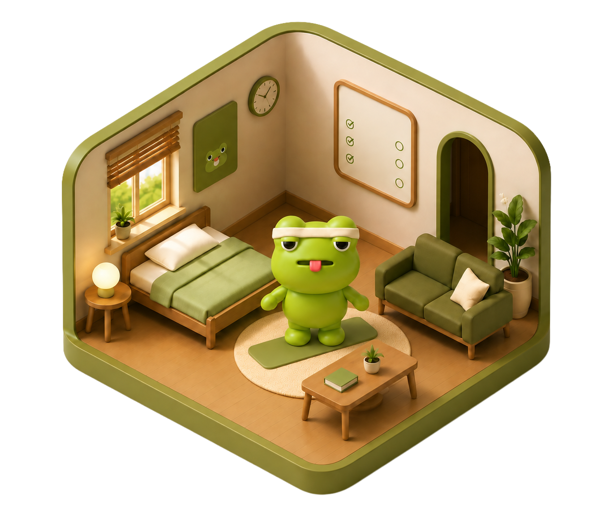
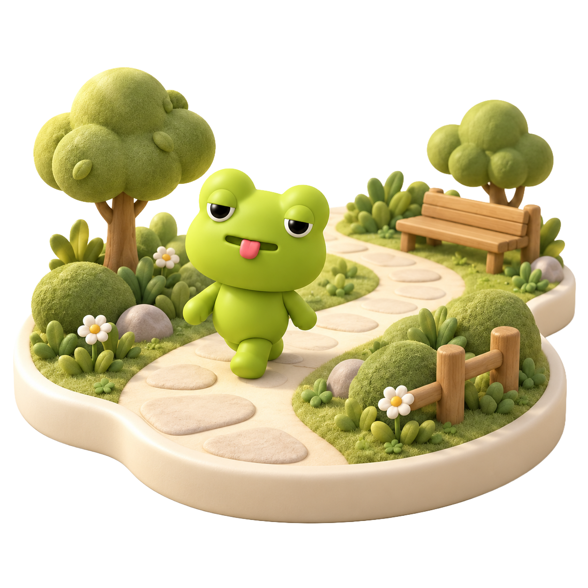

검진과 검진 사이,
나를 돌보는 일상
건강을 챙기고 싶지만 혼자 꾸준히 실천하기 어려운 당신에게.
날지켜방은 구리와 함께 작은 실천을 이어가는 건강 습관 서비스입니다.
>
작게 시작해요
일상에서 할 수 있는 작은 실천부터.
나를 돌보는 건강 습관을 시작해보세요.
즐겁게 함께해요
친근한 캐릭터와 함께 매일의 자기돌봄에
즐거움을 더해보세요.
꾸준히 이어가요
검진과 검진 사이에도 나를 챙길 수 있도록.
작은 실천을 일상의 습관으로 이어가세요.
소개 영상
구리도, 우리처럼 하루를 보내요
밥을 먹고, 몸을 움직이고, 잠시 쉬어가는 시간. 특별하지 않은 하루 속에서도 나를 챙기는 순간은 있습니다. 날지켜방은 구리와 함께 그 평범한 순간을 이야기합니다.

검진은 하루, 나를 돌보는 일상은 매일.
‘검진과 검진 사이’는 다음 검진을 기다리는 동안에도 나를 돌보는 일상을 이어가자는 뜻입니다. 날지켜방은 건강을 생각하는 마음이 작은 실천으로 이어지기를 바랍니다.
